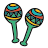
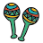

Athena Hernandez
¡Hola, Mundo! I'm Athena, a bilingual girl from San Diego, California. I'm currently a rising high school senior who loves to learn anything related to computer science. I also love to figure skate, write, tutor, and eat Mexican food. I adore my two chihuahuas: Finito and CeeLo—yeah, like the rapper. Keep scrolling to learn more about me!
Cybersecurity Researcher @ NYU Jul 2022—Present
Currently researching "Software Supply Chain Improvements to TUF" at the Secure Systems Lab under Justin Cappos, Lukas Pühringer, and Aditya Sirish on The Winston Foundation's scholarship as part of the NYU GSTEM program.
Founder & Tutor @ Codificar con Coco Mar 2020—Present
Teaching computer science classes weekly, specifically Python and Scratch, in Spanish to elementary students in Tijuana, Mexico.
Head Ambassasdor, Intern, & TA @ League of Amazing Programmers Mar 2020—Aug 2021
I assisted with Java app development classes as a TA to reciprocate the knowledge I gained from studying at the League. I also interned under a few of the teachers over the summer of 2020. Later, through 2021, I became a head ambassador and helped with programming events to enrich students' experiences.
HSEP Student @ UC Berkeley Sep 2020—Nov 2020
Participated in the Society of Women Engineers (SWE)'s fall High School Engineering Program (HSEP) at UC Berkeley.
So... you know a little bit about my studies and goals, but that's not the only thing I care about. And, well, this is a personal website after all, so I've gotta share some more personal stuff here. My pronouns are she/her. I have a lot of hobbies. One of my main hobbies is figure skating. I'm currently working on my senior moves in the field, and I'm an open juvenile skater. I love to listen to music—especially anything hype. I play violin and participate in my school's orchestra. I really like LEGOs. Particularly the LEGO flower bouquet that sits in the corner of my desk. On late Friday nights, I like to hop on Minecraft and play the classic server survival or Hypixel's Skywars. I'm a dog person, but I can't say I'm not a cat person because I've never had one. If you couldn't already tell, I plan on majoring in computer science later on in college and I'm working toward closing the diversity gap that currently exists in this field.

I love programming and learning anything I can about it. I'm very comfortable with Python and Java. I built this COVID-19 app in Processing at the League the summer after my freshman year. I'm gradually learning C++.
I'm pretty good with web design with HTML, CSS, Bootstrap, and JavaScript, but there's always more stuff to look up learn. I've had some experience in Django for backend
development and Swift for iOS app development. Currently, I'm learning more about cybersecurity in software supply chains through working with in-toto and The Update Framework (TUF).
In college, I hope to learn more about machine learning. #qtπ #womxninstem


My Mexican heritage is an important part of who I am. Not just because of the food. As leader of the Latinx American Student Organization (LASO) club at my school, I make sure to stay connected with other students like me through club meetings and school events we host. Do you recognize the women figure on the bottom right? That's Frida Kahlo. She was an extremely talented painter who worked on portaits that emphasize Mexican culture. Check out some of her paintings here. My favorite's Self-Portrait on the Borderline Between Mexico and the United States.
 

Food! I love it. Especially Mexican food. Especially tacos de carne asada and pozole blanco. This section is mostly due to the fact that I couldn't resist how cute these svgs were. But, there weren't any icons of dishes *sadge*, so here are a few of my favorite ingredients I guess? Side note: I've noticed that a lot of Ketchup lovers hate tomatoes. I'm the opposite of that. PSA: if you haven't tried pears with lemon and salt, you need to drop whatever your doing right now. Try it. Also try sea salt caramel or dulce de leche ice cream. It's bussin.
Email me at athenahernandezc gmail com or reach out on the social media platforms linked below if you wanna stay in touch!


Copyright © 2022 Athena Hernandez. All rights reserved.